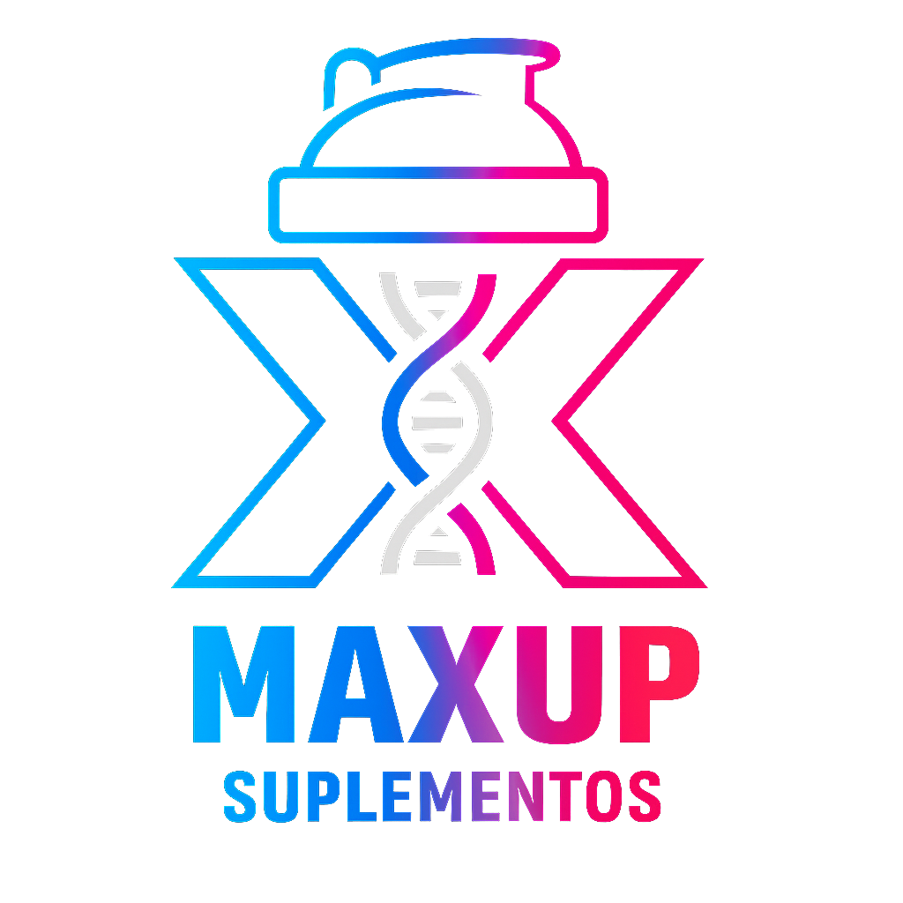

PRIVACIDAD Y CLUB MAXUP
Responsable y datos recopilados
MAXUP Suplementos, con atención en Calixto Gauna 1045, General Güemes, Salta, es responsable de los datos enviados voluntariamente mediante Club MAXUP. Podemos solicitar nombre, celular, correo electrónico, usuario de Instagram, preferencias y constancia de consentimiento.
Para qué usamos los datos
- Verificar el registro y evitar participaciones duplicadas.
- Administrar chances y sorteos mensuales.
- Enviar las novedades de productos, reposiciones o cambios relevantes que la persona eligió recibir.
- Contactar a quienes resulten ganadores.
- Prevenir abusos y mantener un historial auditable.
No vendemos la base de datos. Los datos se conservan mientras el registro permanezca activo o durante el tiempo razonablemente necesario para acreditar sorteos y atender reclamos.
Consentimiento, acceso y baja
El registro es opcional y el catálogo puede verse sin proporcionar datos. Cada correo incluye un mecanismo de baja. También se puede solicitar acceso, corrección o eliminación escribiendo por WhatsApp a MAXUP. La baja de avisos no afecta compras anteriores ni obligaciones legales que deban conservarse.
Bases generales de los sorteos
- Participan los registros activos con correo verificado al momento de cerrar cada sorteo.
- Cada miembro verificado recibe una chance base. Las acciones promocionales verificadas, como etiquetar a MAXUP, pueden sumar chances adicionales.
- Cada etiqueta o referencia sólo puede acreditarse una vez. MAXUP puede invalidar registros duplicados, automatizados, falsos o imposibles de comprobar.
- El sorteo se realiza mensualmente mediante selección aleatoria ponderada y queda asentado con fecha, participantes, cantidad total de chances y resultado.
- El premio de cada mes se comunica en los canales oficiales de MAXUP. No puede canjearse por dinero salvo indicación expresa.
- La persona ganadora será contactada con los datos registrados. Si no responde dentro del plazo comunicado, podrá realizarse una nueva selección.
- Instagram, Meta y otras redes sociales no patrocinan ni administran estos sorteos.
Seguridad y cambios
Aplicamos controles de acceso y registramos las operaciones administrativas. Esta política puede actualizarse cuando cambie el funcionamiento del Club; la versión vigente siempre estará publicada en esta página.